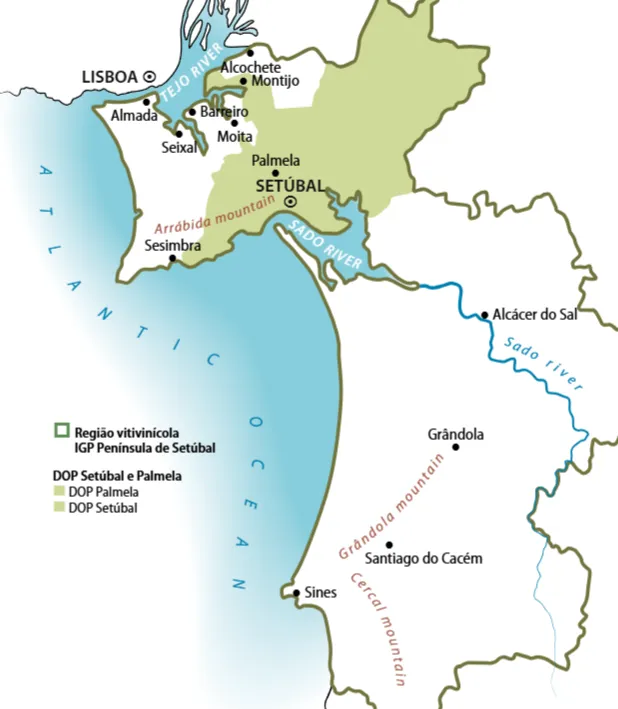
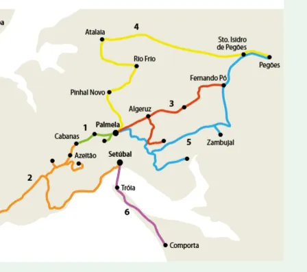

Kapitel 4 · Die portugiesischen Weinregionen
Weinregion Península de Setúbal
Kennzahlen (2022)
Rebfläche: 8.027 ha
Gesamterzeugung: 50.004.400 Liter
Durchschnittsertrag: 6.200 Liter/ha
Zahl der Kellereien: 379
Geschichte
Phönizier und Griechen brachten die Rebsorten aus dem Nahen Osten in diese Region. Weil sie das Klima für günstig und die Hänge der Arrábida sowie die Uferzone des Tejo für den Rebbau geeignet hielten, legten sie Pflanzungen an. Später trugen Römer und Araber viel zur Entwicklung des Rebbaus auf dieser Halbinsel bei. Der Weinexport begann zur Zeit der Gründung des Königreichs Portugal. Ende des Mittelalters bezeugten königliche Urkunden das Interesse des Königs an diesem Wein. Der Wein aus Azóia (einem Hafen nahe Setúbal) war auf dem englischen Markt eine sehr bekannte Marke. Die phönizische Sorte Muskat von Kelibia/Alexandria erlangte unter dem Namen Moscatel de Setúbal internationalen Rang. Lancers, die erste große weltweit vertriebene Weinmarke, stammt aus dieser Region. Die Weinregion an der Westküste südlich von Lissabon hat ein Terroir, das sich besonders für ihren berühmten und sehr geschätzten Likörwein eignet.
Terroir
Klima nach Köppen-Geiger:
Csa und Csb. Feuchtgemäßigtes Klima mit sommerlicher Trockenzeit.
Indizes des MCC-Systems (Tonietto & Carbonneau, 2004): heliothermischer Index (HI): +1, Kühle-Nacht-Index (CI): −1, Trockenheitsindex (DI): +2. Die Mikroklimate hängen davon ab, in welchem der beiden orografisch und bodenkundlich unterschiedlichen Bereiche ein Weinberg liegt. Im zeitigen Frühjahr besteht hohe Frostgefahr,


Route 1 – Terras de Santiago · Route 2 – Terras da Arrábida · Route 3 – Terras Verdes · Route 4 – Schatz der Siedler · Route 5 – Terras do Sado · Route 6 – Bucht der Delfine
Kartenbeschriftung: Açores · Portugal continental · Graciosa · Pico · Terceira · Madeira · Porto Santo · Cabo Espichel
dazu hohe Luftfeuchtigkeit mit Infektionsgefahr durch Pilzkrankheiten. Es besteht Sonnenbrandgefahr.
Niederschlag: 600–800 mm. Die um 9 Uhr gemessene relative Luftfeuchtigkeit schwankt zwischen 66 und 86 Prozent.
Wind: Die Windstärke liegt zwischen 5 und 8 km/h; Juli und August sind die windigsten Monate.
Geologie: „Die Region lässt sich in zwei völlig unterschiedliche orografische Zonen teilen. Die im Süden und Südosten ist gebirgig, gebildet von den Gebirgszügen Arrábida, Rosca und S. Luís sowie den Bergen von Palmela, S. Francisco und Azeitão, durchzogen von Tälern und Hügeln auf 100 bis 500 Metern Höhe. Die andere dagegen ist flach und erstreckt sich über eine große Ebene entlang des Sado.“ Das Klima ist gemischt subtropisch-mediterran. „Beeinflusst durch die Nähe des Meeres, die Flussbecken von Tejo und Sado sowie die Gebirge und Höhenzüge der Region, schwankt die Temperatur wenig, und der Jahresniederschlag liegt zwischen 400 und 500 mm.“
Höhe der Weinberge: zwischen 50 und 500 Metern.
Bodenkunde: Die Böden sind Podsol- und Granitböden, sandiger Ton oder sandig-toniger Lehm, kalkhaltig mit leichter Alkalität, meist sehr tiefgründig und mit geringer Wasserspeicherfähigkeit, einige verdichtet und fruchtbar.
Erzeugte Weintypen
DO- oder IG-Weine der Region: Weiß, Rot, Rosé, Perlwein, Grundwein für Schaumwein, Likörwein.
DO-Weine Setúbal: Likörwein, Weiß, Rot.
DO-Weine Palmela: Weiß, Rot, Rosé, Perlwein, Grundwein für Schaumwein, Likörwein.
Regionale Kontakte
Technische Informationen: Comissão Vitivinícola Regional da Península de Setúbal (Regionale Weinbaukommission der Península de Setúbal), Rua Padre Manuel Caetano 26; Tel.: 212 337 100,
Website: www.cvr-psetubal.com
Kulturelle Informationen zum Wein der Region: Confraria dos Amigos da Bacalhôa Vinhos de Portugal (Bruderschaft der Freunde der Bacalhôa-Weine),
Website: www.bacalhoa.com; Confraria do Periquita, Website: www.jmf.pt; Confraria do Moscatel de Setúbal (Bruderschaft des Moscatel de Setúbal).
Zertifizierungsstelle: Comissão Vitivinícola Regional da Península de Setúbal, Rua Padre Manuel Caetano 26, 2950-253 Palmela – Tel.: 212 337 100,
Fax: 212 337 108 –
Website: www.cvr-psetubal.com, E-Mail: geral@cvr-psetubal.com
Weintourismus: Rota dos Vinhos da Península de Setúbal (Weinroute der Península de Setúbal), Costa Azul; Casa Mãe da Rota dos Vinhos, Largo de São João, 2950-000 Palmela,
Tel.: 212 334 990;
Website: www.rotavinhospsetubal.com. Informationen zu Erzeugern und Abfüllern: http://www.ivv.min-agricultura.pt/np4/1736.html, Jahrbuch 2011, S. 225–226.
Für IG Península de Setúbal (Landwein) zugelassene Sorten
Rechtsgrundlage: Ministerialerlass Nr. 346/2013 vom 27. November und Gesetzesdekret Nr. 212/2004 vom 3. August.
Rotweine: Alfrocheiro (Tinta Bastardinha), Alicante Bouschet, Alvarelhão (Brancelho), Alvarelhão Ceitão, Amaral, Amor Não Me Deixes, Amostrinha, Aragonez (Tinta Roriz, Tempranillo), Aramon, Arinarnoa, Arjunção, Baga, Barreto, Bastardo (Graciosa), Bonvedro, Borraçal, Branjo, Cabernet Franc, Cabernet Sauvignon, Caladoc, Calrão, Camarate, Carignan, Carmenère, Carrega Burros, Casculho, Castelã, Castelão (Periquita), Castelino, Casteloa, Cidadelhe, Cidreiro, Cinsault, Concieira, Coração de Galo, Cornifesto, Corropio, Corvo, Cot (Malbec), Doçal, Doce, Donzelinho Tinto, Dornfelder, Engomada, Esgana Cão Tinto, Espadeiro, Espadeiro Mole, Ferral, Galego, Gamay, Gonçalo Pires, Gouveio Preto, Grand Noir, Granjeal, Grenache, Jaen (Mencía), Labrusco, Lourela, Malandra, Malvarisco, Malvasia Preta, Manteúdo Preto, Marselan, Marufo (Mourisco Roxo), Melhorio, Meira, Merlot, Mondet, Monvedro, Moreto, Moscatel Galego Tinto, Mourisco, Mourisco de Semente, Mourisco de Trevões, Negra Mole, Nevoeira, Padeiro, Parreira Matias, Patorra, Pedral, Pero Pinhão, Petit Bouschet, Petit Verdot, Pexem, Pical (Piquepoul Noir), Pilongo, Pinot Noir, Português Azul (Blauer Portugieser), Preto Cardana, Preto Martinho, Rabo de Anho, Rabo de Lobo, Ramisco, Ricoca, Rodo, Roseira, Rufete (Tinta Pinheira), Sangiovese, Santareno, Sevilhão, Syrah (Shiraz), Tannat, Teinturier, Tinta, Tinta Aguiar, Tinta Aurélio, Tinta Barroca, Tinta Caiada (Pau Ferro, Tinta Lameira), Tinta Carvalha, Tinta de Lisboa (Bastardo Tinto), Tinta Fontes, Tinta Francisca, Tinta Grossa (Carrega Tinto), Tinta Martins, Tinta Mesquita, Tinta Miúda, Tinta Negra (Molar, Saborinho), Tinta Penajoia, Tinta Pereira, Tinta Pomar, Tinta Tabuaço, Tintinha, Tinto Cão, Tinto Sem Nome, Touriga Fêmea, Touriga Franca, Touriga Nacional, Transâncora, Trincadeira (Tinta Amarela, Trincadeira Preta), Valdosa, Varejoa, Verdelho Tinto, Verdial Tinto, Vinhão (Sousão), Xara, Zé do Telheiro, Zinfandel, Gewürztraminer und Moscatel Galego Roxo.
Weißweine: Alicante Branco, Almafra, Almenhaca, Alvadurão, Alvar, Alvarinho, Antão Vaz, Arinto (Pedernã), Arinto do Interior, Arinto dos Açores (Terrantez da Terceira), Arnsburger, Avesso, Azal, Barcelo, Bastardo Branco, Batoca (Alvaraça), Beba, Bical (Borrado das Moscas), Boal Barreiro, Boal Branco, Boal Espinho, Branco Desconhecido, Branco Especial, Branco Gouvães (Alvarelhão Branco), Branco Guimarães, Branco João, Branda, Cainho, Caracol, Caramela, Carrasquenho, Carrega Branco, Cascal, Castelão Branco, Castelo Branco, Cerceal Branco, Cercial, Chardonnay, Chasselas, Chasselas Cioutat (Chasselas Salsa), Chasselas Sabor, Chenin, Códega do Larinho, Colombard (Semilão), Cornichon, Corval, Crato Espanhol, Dedo de Dama, Diagalves, Dona Joaquina, Donzelinho Branco, Dorinto, Encruzado, Esganinho, Esganoso, Estreito Macio, Fernão Pires (Maria Gomes), Folgasão, Folha de Figueira (Dona Branca), Fonte Cal, Galego Dourado, Gouveio, Gouveio Estimado, Gouveio Real, Granho, Greco (Greco di Tufo), Grüner Veltliner, Jacquère, Jampal, Lameiro, Larião, Leira, Loureiro, Luzidio, Malvasia, Malvasia Bianca, Malvasia Branca, Malvasia Cândida, Malvasia de São Jorge, Malvasia Fina, Malvasia Parda (Farinheira), Malvasia Rei, Malvasia Romana, Manteúdo, Moscadet, Moscatel Graúdo, Moscatel Nunes, Mourisco Branco, Müller-Thurgau, Pé Comprido, Perigó, Perrum, Pinot Blanc, Pintosa, Praça, Promissão, Rabigato, Rabigato Franco, Rabigato Moreno, Rabo de Ovelha, Ratinho, Riesling, Roupeiro Branco, Samarrinho (Budelho), Santoal, São Mamede, Sarigo, Sauvignon (Sauvignon Blanc), Semillon, Sercial (Esgana Cão), Síria (Roupeiro, Códega), Tália (Ugni Blanc, Trebbiano Toscano), Tamarez (Molinha), Terrantez, Terrantez do Pico, Trajadura (Treixadura), Trincadeira Branca, Trincadeira das Pratas, Uva Cão, Uva Cavaco, Valveirinho, Vencedor, Verdejo, Verdelho, Verdial Branco, Viognier, Viosinho und Vital.


Renommierte Weingüter
in der Region: Cooperativa Agrícola de Santo Isidro de Pegões
Die Genossenschaft erzeugt Wein aus Traubenernten von durchschnittlich 11.000.000 kg jährlich von einer Rebfläche von 1.117 Hektar.
Casa Ermelinda Freitas
Dieses Familienunternehmen, das seit Generationen von kompetenten Frauen geführt wird, bewirtschaftet 550 Hektar Weinberge und füllt jährlich mehr als 15 Millionen Liter Wein ab, die in rund 30 Märkte weltweit gehen. José Maria da Fonseca Vinhos S.A.: Ein Familienunternehmen mit fast zwei Jahrhunderten Weingeschichte, das modernste Kellertechnik einsetzt und mehrere Güter mit zusammen fast 650 Hektar Weinbergen bewirtschaftet. Die Kellerei gehört zu den modernsten Europas und kann 6,5 Millionen Liter Wein gleichzeitig vinifizieren. Bacalhôa Vinhos de Portugal: die Weingruppe des Unternehmers Joe Berardo mit Kellereien in den wichtigsten Weinregionen Portugals, nämlich Douro, Dão, Bairrada, Península de Setúbal (Azeitão), Lisboa und Alentejo.
Mit einer Gesamtkapazität von 20 Millionen Litern, 15.000 Eichenfässern und rund 1.000 Hektar ertragfähiger Weinberge setzt Bacalhôa Vinhos de Portugal weiter auf Innovation in der Branche. Quinta do Piloto
Venâncio da Costa Lima – Palmela; Adega de Palmela
Filipe Palhoça Vinhos – Palmela
Quinta do Alcube, Adegas Fernão Pó, Adega Winery